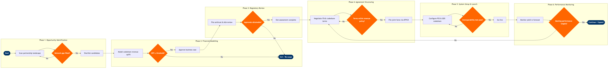

| Step | L4 Step Name | KPI / Target | Pain Point / Risk | Gate |
|---|---|---|---|---|
| 1.1 | Scan competitive landscape for partnership gaps | O&D market coverage gap ≥5% of total addressable revenue identified | OAG data lags IATA SSIM submissions by 4–6 weeks, causing stale competitive benchmarks during fast-moving alliance negotiations | |
| 1.2 | Assess network complementarity of candidate partners | Incremental connecting pax potential ≥50,000 pax/year per candidate to proceed | SkySYM simulation accuracy degrades for thin O&D markets (<10 bookings/day) where demand signal is insufficient for reliable modelling | |
| 1.3 | Gate: Approve candidate shortlist for business case | Shortlist decision cycle ≤10 business days from scan initiation | SkyCAST demand forecasts for new O&D markets (no historical booking data) carry ±25% confidence intervals, creating executive pushback on go/no-go decisions | ⚠ |
| 2.1 | Model incremental codeshare revenue per O&D | Projected revenue uplift ≥3% on affected O&D markets within 12 months of go-live | NRM O&D revenue attribution for connecting itineraries is split by leg, obscuring true contribution of partner-fed traffic; manual adjustment required | |
| 2.2 | Model interline prorate and revenue-share economics | Partnership NPV ≥ $5M over 5-year horizon to proceed to regulatory review | IATA standard prorate methodology (IATA Resolution 850) frequently under-compensates short-haul feeder partners, leading to prolonged bilateral negotiation cycles averaging 6–9 months | |
| 2.3 | Gate: Approve business case for regulatory submission | Business case approval decision ≤15 business days from financial model submission | Executive approval stalls when NPV is marginal (e.g. $5–8M) and downside scenarios show revenue dilution on own metal — no standardised sensitivity threshold exists | ⚠ |
| 3.1 | File for antitrust immunity or bilateral ASA review | Regulatory filing submitted within 20 business days of business case approval | US DOT antitrust immunity reviews average 12–18 months; EU bilateral amendments require ECAA or bilateral renegotiation via member-state government, adding 6–24 months of uncertainty | |
| 3.2 | Assess slot availability at partner hub airports | Required slots secured for ≥90% of planned codeshare frequency within IATA schedule season | Level 3 coordinated airports (e.g. LHR, JFK, CDG) have near-zero slot availability; grandfather rights are held by incumbents, making new entry dependent on costly secondary market transactions or seasonal swap negotiations | |
| 3.3 | Gate: Confirm regulatory and slot approvals are obtainable | Clear regulatory pathway confirmed within 30 business days of filing; slot coverage ≥90% | Regulatory timelines are non-deterministic; slot constraints at Level 3 airports can invalidate the entire business case after 3–6 months of investment, with no partial recovery mechanism | ⚠ |
| 4.1 | Negotiate Interline Traffic Agreement and prorate rates | ITA negotiation closed within 60 days of regulatory clearance; prorate floor ≥65% of published fare for feeder leg | Altéa interline carrier onboarding requires manual BSP/clearing house configuration (ARC/IATA) taking 4–8 weeks after ITA signing — creates gap between commercial agreement and operational readiness | |
| 4.2 | Negotiate codeshare block-space or free-sale agreement | Codeshare seat utilisation ≥70% on protected block within 6 months of launch | Free-sale agreements create inventory cannibalisation risk when partner's own metal competes on overlapping O&D segments; NRM O&D controls do not natively arbitrate between own-metal and codeshare inventory in real time | |
| 4.3 | Gate: Validate agreement terms against revenue policy | Agreement terms deliver ≥90% of NPV projected in approved business case | Late-stage concessions (e.g. prorate adjustments, block-space size reductions) during final negotiation rounds can erode NPV below approval threshold without triggering a formal re-approval cycle | ⚠ |
| 4.4 | File codeshare and interline fares via ATPCO | 100% of planned O&D joint fares live in GDS within 14 days of agreement execution | ATPCO filing errors in combinability rules (Cat 10) cause GDS repricing failures, leading to customer-facing booking errors and revenue leakage; testing requires manual GDS shop verification across Sabre, Travelport, and Amadeus | |
| 5.1 | Configure PSS codeshare inventory and host carrier setup | PSS configuration completed and unit-tested within 21 days of agreement execution | Altéa codeshare configuration requires coordination across PSS, DCS (Departure Control), and Loyalty modules; misaligned Rapid Rewards/FFP accrual rules on partner segments result in customer complaints and manual points corrections | |
| 5.2 | Configure GDS codeshare display and availability feed | Codeshare itinerary display accuracy ≥99% across all three GDS within 7 days of Altéa config completion | GDS display logic for codeshare itineraries varies by channel (Sabre vs Travelport vs Amadeus); duplicate or ghost inventory appears when schedule changes are not propagated simultaneously across all three, requiring manual suppression | |
| 5.3 | Gate: Pass end-to-end interoperability test suite | ≥95% of test scenarios pass (booking, ticketing, check-in, FFP accrual, irregular ops rebooking) | Irregular operations (IROPS) rebooking on codeshare itineraries across PSS boundaries is the most common test failure; Altéa does not natively rebook passengers onto partner-operated flights without manual agent intervention | ⚠ |
| 6.1 | Launch codeshare service and activate commercial marketing | First-week codeshare booking volume ≥50% of 90-day ramp forecast | Launch delays caused by late regulatory clearance compress the marketing window before the IATA schedule season, reducing awareness and first-season load factors vs forecast by an average of 8–12 percentage points | |
| 6.2 | Monitor connecting yield, load factor, and prorate settlement | Connecting pax yield ≥80% of model projection; prorate settlement discrepancy ≤2% of billed revenue | IATA BSP prorate settlement cycles are monthly with 45-day lag, making real-time revenue performance tracking dependent on booking-level proxies in Redshift rather than actual settled amounts | |
| 6.3 | Gate: Annual review — expand, renegotiate, or exit partnership | Annual review completed and decision issued ≤90 days before agreement renewal deadline; partnership retained if NPV reforecast ≥80% of original approval threshold | Exit clauses in codeshare agreements typically require 6–12 months notice; airlines that miss the review cycle are locked into underperforming partnerships for an additional year, absorbing continued prorate losses | ⚠ |